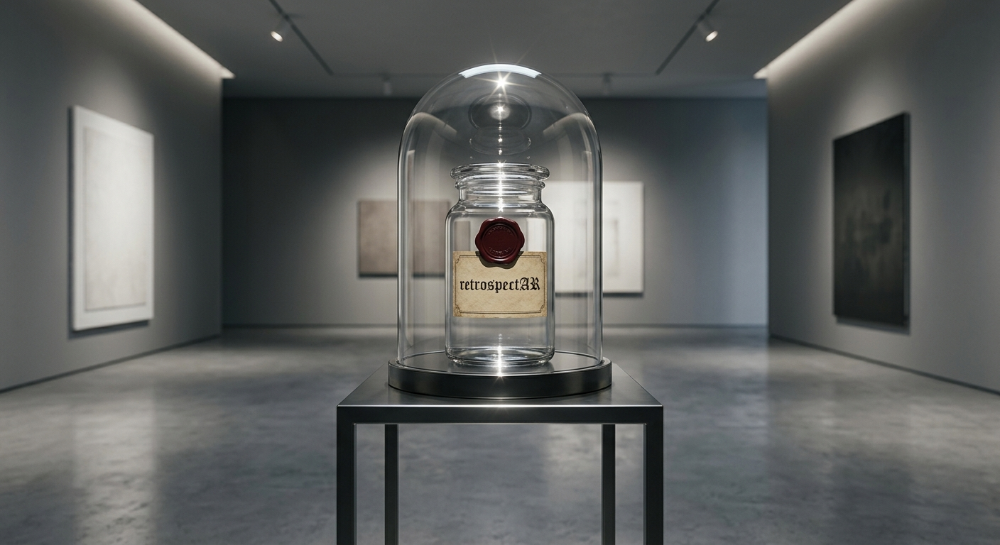
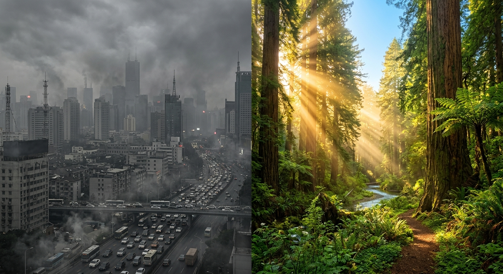
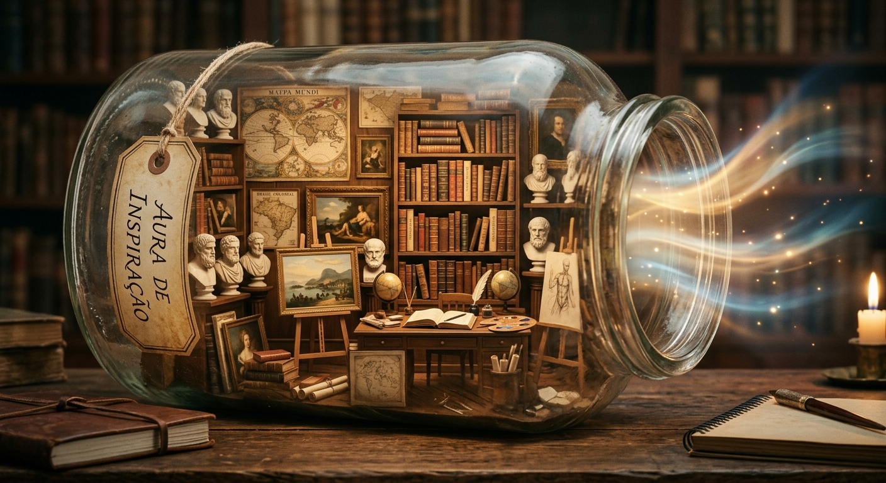
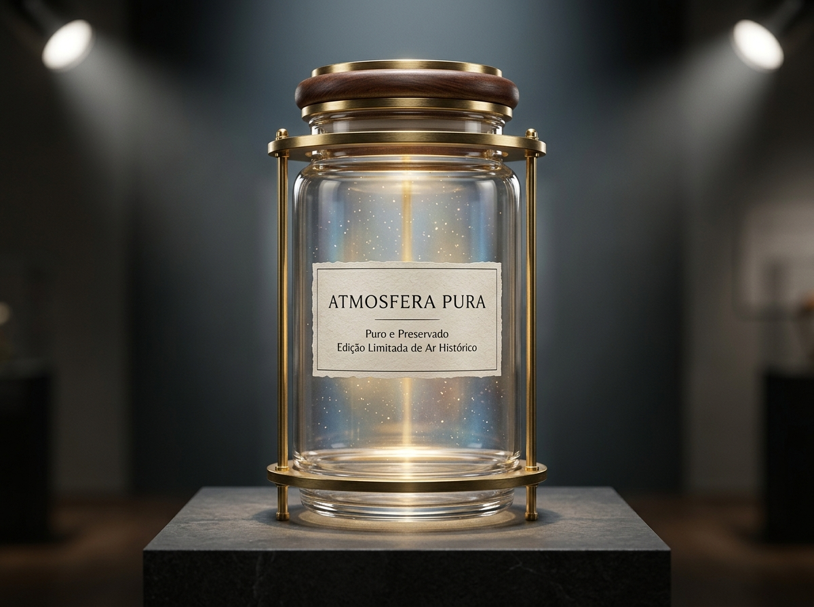

Possibilitando o impossível
Trazendo uma nova forma de se conectar com o passado e experenciar o que você nunca viveu.
Uma forma de inovAR
Um produto nunca visto antes, mas que nunca será esquecido. Uma forma de você se reconectar com os ancestrais. Ar do passado em conserva.
Catálogo
E qual a função do ar?
• Pureza
O ar atual é carregado de poluição e microplásticos que geram cansaço. Ao respirar um ar antigo você está recebendo uma oxigenação pura, limpa e natural.
• Exclusividade
É um produto limitado e escasso, o que o torna um artigo de luxo. O estoque dele não pode se repor, o que torna a oferta baixa em relação à demanda.
• Conexão
Ao abrir o recipiente você compartilha exatamente a mesma atmosfera que oxigenou as mentes de gênios do passado, o que pode trazer inspiração em momentos necessários.
Catálogo
Conheça os produtos que temos disponíveis para você.